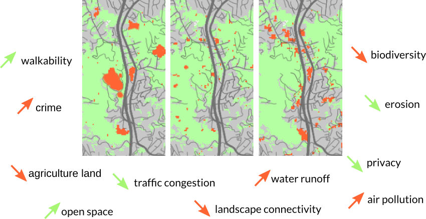
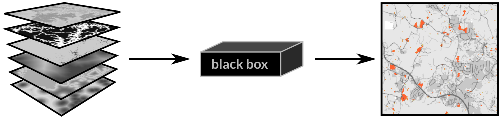
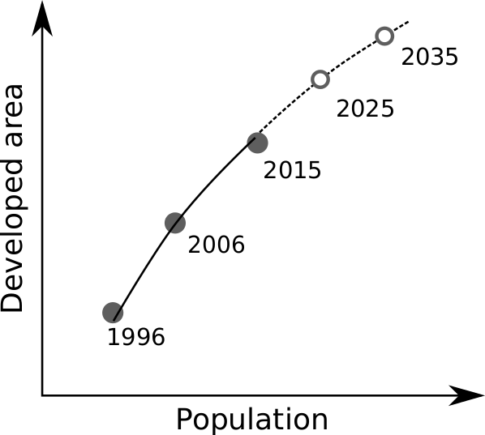
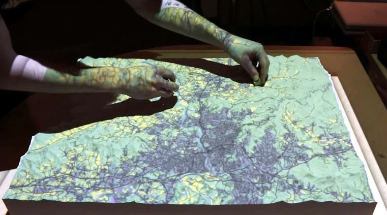
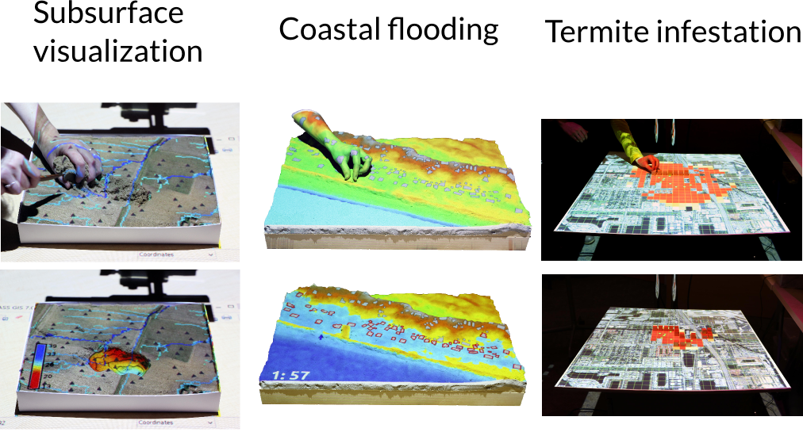

Urban growth models
simulating the future scenarios

Urban growth models: challenges
Can we understand the behavior of the model?
Can we make sure it is working as described?

FUTURES
FUTure Urban-Regional Environment Simulation
- stochastic, patch-based land change model
- simulates urban growth
- accounts for location, quantity,
and pattern of change
- positive feedbacks (new development
attracts more development)
- allows spatial non-stationarity
FUTURES
- open source (+ dependencies)
- modular
- transparent

POTENTIAL
- multilevel logistic regression for development suitability
accounts for variation among subregions (for example policies
in different counties)
- inputs are uncorrelated predictors (distance to roads and development, slope, ...)
DEMAND
- estimates the rate of per capita land consumption for
each subregion
- extrapolates between historical changes in population and land conversion
- inputs are historical landuse, population data, population projection

PGA
- stochastic algorithm
- converts land in discrete patches
- inputs are patch characteristics (distribution of patch sizes and compactness)
derived from historical data

Open source FUTURES
To go beyond experimental prototype
we needed to make FUTURES:
- more efficient and scalable
- as easy to use as possible for a wider audience
- open source and maintainable in the long run
⇒ new FUTURES GRASS GIS add-on r.futures
Why GRASS GIS?
For model developers:
- modular architecture: modules in C/C++ and Python
- all needed GIS functions at hand
- efficient I/O libraries
- able to process large datasets
- automatically generated CLI and GUI
- infrastructure for online manual pages
- daily compiled binaries for Windows
(thanks to M. Landa,
FCE CTU in Prague)
- maintained by community and developers
Why GRASS GIS?
For model users:
- multiplatform
- graphical user interface
- scriptable (Bash, Python, R)
- easy installation:
easy installation:
> g.extension r.futures
- easy installation:
available suite of tools for further analyses and visualization
(spatio-temporal analyses, animations)
r.futures: CLI
r.futures.pga -s subregions=counties developed=urban_2011 \
output=final demand=demand.csv discount_factor=0.1 compactness_mean=0.1 \
predictors=road_dens_perc,forest_smooth_perc,dist_to_water_km,dist_to_protected_km \
devpot_params=potential.csv development_pressure=devpressure_0_5 \
n_dev_neighbourhood=30 gamma=0.5 patch_sizes=patches.txt num_neighbors=4 output=final
r.futures: TUI
TUI: Tangible User Interface

Tangible Landscape

Tangible Landscape couples a digital and a physical model through a continuous cycle of 3D scanning, geospatial modeling, and projection
Tangible Landscape: applications

FUTURES: references
- Meentemeyer, R. K., Tang, W., Dorning, M. A., Vogler, J. B.,
Cunniffe, N. J. and Shoemaker, D. A., 2013. FUTURES: Multilevel
Simulations of Emerging UrbanRural Landscape Structure
Using a Stochastic Patch-Growing Algorithm. Annals of the Association
of American Geographers 103(4), pp. 785–807.
- Dorning, M. A., Koch, J., Shoemaker, D. A. and Meentemeyer,
R. K., 2015. Simulating urbanization scenarios reveals tradeoffs
between conservation planning strategies. Landscape and Urban
Planning 136, pp. 28–39.
- Pickard, B. R., Van Berkel, D., Petrasova, A. and Meentemeyer,
R. K., in prep. Future patterns of urbanization reveal trade-offs
among ecosystem services.
- Petrasova, A., Petras, V., Van Berkel, D., Harmon, B. A., Mitasova, H., and Meentemeyer, R. K., 2016.
Open Source Approach to Urban Growth Simulation.
Int. Arch. Photogramm. Remote Sens. Spatial Inf. Sci., XLI-B7, 953-959.